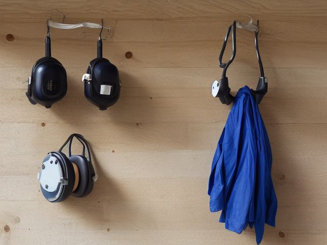

Workshop micro zone
The Safety and PPE Station
Make protective gear so easy to reach that putting it on is faster than skipping it.
One session: 30-45 min. most of it in Sort and Standardize, checking dates and writing them where you can read them

What done looks like
Safety glasses on hooks at the door you come in through, one labeled pair per regular user, hearing protection beside them, and dust masks in a dated box. An extinguisher mounted on the wall with its gauge in the green and clear floor in front of it, and a first aid kit that still has burn dressings and more than three plasters in it.
Check these before you start
- Burn or fireAn extinguisher with the gauge out of the green, no inspection date on it, or a stack of timber leaning against the wall in front of it.
- Fall, cut, or crushSafety glasses so scratched that you take them off to see the cut line, which is the moment the chip flies.
The six passes, in order
Work them in this order. Sorting after you have arranged things means arranging things you were about to remove.
Sort
Decide what stays. Everything else leaves the zone now.
Scratched, hazed safety glasses are the reason people stop wearing safety glasses, so bin them. Perished gloves, respirator cartridges past their date, and a first aid kit you have quietly been raiding for household plasters all get replaced rather than rearranged.
Straighten
Give what stays a home, placed where the hand actually reaches.
Hang the gear at the door on the path you walk in, not on the far wall past the bench, and sized to the actual people who work here. Silhouettes behind each item show at a glance which pair is missing.
Shine
Clean it, and use the cleaning to inspect what you cannot see when it is full.
Wash the lenses in soap and water rather than wiping them on a dusty shop rag, which is what scratches them in the first place. Wipe the sweat and sawdust off the earmuff cushions so they still seal.
Safety
Make the zone safe for everybody who uses it, including the shortest person.
Lift the extinguisher, check the gauge sits in the green, and confirm nothing has crept into the space in front of it. Then put your hand on the shop's power cutoff and confirm you could reach it with sawdust in your eyes and the lights off.
Standardize
Write down the best way you know today, so it survives you forgetting.
Put an inspection date on masking tape on the extinguisher bracket and the first aid kit lid, and hang your safety glasses over the plug of the saw so you cannot power up without handling them first.
Sustain
Attach the reset to something that already happens, so it keeps itself.
The gear goes back on the board as you switch off the shop light, never into a drawer or a jacket pocket, so the next person to walk in finds a full board.
The visitor rule
The genuinely awkward decision here is not your own gear, it is what happens when your brother-in-law or your fourteen year old wanders in while the saw is running and wants to help. You have been handling it case by case, which means you have been handling it badly. Decide it once and hang it on the wall: anyone who works in this shop has their own labeled set of glasses and muffs, and there is one spare set on a hook marked for visitors. If a visitor will not wear it, they stay on the near side of the doorway and watch. Saying that once, in advance, is far easier than saying it while holding a running grinder.
Cleaning it properly
Clean the gear so it still protects. Wash the lenses in soap and water instead of a dusty rag that scratches them, and wipe the sweat and sawdust off the earmuff cushions so they still seal.
Inspect as you clean. Cleaning is the only time you see the zone empty, so use it.
- Earmuff cushions gone hard, cracked, or split so they no longer seal against your head.
- Lenses so scratched or hazed that you would be tempted to lift them off to see the cut line.
- The first aid kit low on burn dressings or down to its last few plasters, or dressings past their date.
- The dust mask box empty, or masks that have sat open and loaded with the dust they are meant to stop.
- Corrosion on the extinguisher body, or a bent, missing, or unsealed safety pin.
The standard that keeps it fixed
A full silhouette board at the door, one labeled set per user plus a visitor set, with dated extinguisher and first aid checks.
Reset trigger. When your safety glasses come off your face, they go straight onto their hook, never into a pocket or a drawer.
Next in this room
- The Finishing and Chemical Zone, the zone before this one
- All 6 micro zones in the Workshop
Related reading
- What is 6S?
- This zone's safety pass, in full
- Is one spot in this zone always the one you skip?
- Why this zone gets messy again
- Decluttering vs. organizing
- Before you buy storage for this zone
- Still does not fit, even after the honest count?
- Does something in this zone actually get used somewhere else?
- Stuck on one item in this zone?
- Written the standard, but nobody else follows it?
- Does everyone in the house agree what "done" looks like here?
- Does more than one person use this zone?
- Found a duplicate of something in this zone?
- Why the standard above names one home per category
- Is the everyday item in this zone actually the easy one to reach?
- Not sure whether to keep something in this zone?
- Does this zone keep running out of something?
- Started this zone and stalled partway through?
When you want it off the screen
Carry The Safety and PPE Station into the room
The method above is complete and free. The Whole House Print Pack puts The Safety and PPE Station and the other 113 micro zones on 684 printable cards, so the steps you just read are not stuck behind a phone screen while your hands are full.
The Print Pack, 19 dollarsJust this zone, 4 dollarsOr draw a card free
The Safety and PPE Station on its own is 4 dollars for 6 cards. All 114 micro zones is 19 dollars for 684. The whole house is the better buy; the single zone is here so you can take only what you are working on.
If The Safety and PPE Station keeps fighting back, the real problem usually sits somewhere else in the room. A one hour virtual consult is 250 dollars: we find the function, the friction and the root cause together, and you keep a written standard for the space. See what a consult covers.